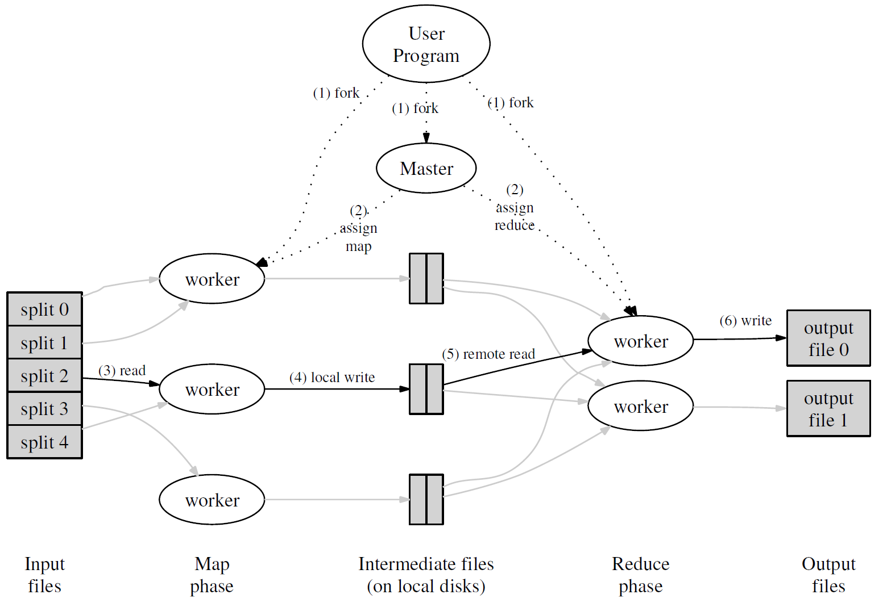

MIT 6.824 Lab1 实验报告: MapReduce
摘要
本篇是 MIT 6.824 Lab1 的实验报告。MIT 6.824 是一门分布式系统的课程 ，最近打算系统地学习一下，我把课程资源放在了博客末尾，感兴趣的同学也可以一起来学。Lab 1 中，要求用 Golang 实现一个 MapReduce 的框架。
遵循课程规定，本文没有放出核心代码，只介绍了一些结构设计和流程思考，可放心食用。
实验准备
拉取代码
在实验指导书中 6.5840 Lab 1: MapReduce (mit.edu)，包含了代码库的地址和一些简单介绍。
1 | $ git clone git://g.csail.mit.edu/6.5840-golabs-2023 6.5840 |
代码骨架介绍
以 src 为当前目录，Lab 1 里需要关注的是以下几个部分：
mr/：MapReduce 的核心逻辑，包含协调器（Coordinator）、Worker、RPC 三部分，需要自己实现。mrapps/：MapReduce 的应用，用于测试，例如wc.go就是单词计数（WordCount）main/mrsequential.go：MapReduce 的串行启动版本，可以参考一些文件读写的代码main/mrcoordinator.go, main/mrworker.go：coordinator、worker 的启动类
理论知识
MapReduce 框架中，包含两种角色和两个阶段（两种任务）。
两个阶段：
- Map 阶段：对分块文件运行 Map 函数
- 函数签名：
func Map(filename string, contents string) []mr.KeyValue - 接收文件名、文件内容为参数，返回 [key,value] 的列表
- 函数签名：
- Reduce 阶段：对同一个 KEY 的 VALUE 聚合结果进行规约计算
- 函数签名：
func Reduce(key string, values []string) string - key 为 Map 阶段产生的某个 key，values 为 Map 阶段该 key 对应的所有 value 的列表
- 函数签名：
- Reduce 阶段必须在所有 Map 任务都完成之后才能开始，否则会丢失数据
两种角色是 Coordinator 和 Worker：
- Coordinator：负责协调任务的执行，将 Map/Reduce 任务下发给 Worker，监听 Worker 状态，如果 Worker 宕机对相关任务进行重新下发
- Worker：负责任务的执行，以心跳与 Coordinator 周期交互
整体的流程如下：
- Coordinator 得到输入文件的切片
- Coordinator 向 Worker 发送 Map 任务
- Worker 上报 Map 任务执行完成，中间结果存储在 Intermediate Files 中
- 所有 Map 任务执行完毕后，Coordinator 对同一个 key 的中间结果进行聚合，下发 Reduce 任务
- Worker 上报 Reduce 任务执行完成，结果写到输出文件中
- 所有 Reduce 任务执行完毕，退出

需要注意的是，Worker 可能由于种种原因宕机，所以需要做容错处理。Coordinator 与 Worker 保持心跳，在发现心跳超时一定阈值后，需要把 Worker 标记为已下线，重新下发任务。
另外，考虑 Worker 宕机的时机，如果 Worker 在写入 Reduce 的输出结果时宕机，写了一半的文件可能会产生误解，指导书里的建议是先把结果写到临时文件中，等到运行结束再重命名。
RPC
首先需要思考的是，Coordinator 和 Worker 间的通信有几种。目前的架构下，只能由 Worker 主动向 Coordinator 发起请求，获得回应，消息种类可能是：
- 请求一个任务
- 上报心跳
- 上报任务结果
需要在 RPC 文件里定义好这些请求的 request 和 reply，例如，任务请求的例子如下：
1 | type AcquireTaskRequest struct { |
设计上，worker 侧最好带有一个唯一的 code，方便追踪和排错，任务也是。此外，任务还需要指定一个执行模式，map/reduce/ 其他。由于 go 没有枚举类型，这里用一个 int8 表示。稍加设计，可以发现任务类型可分为四种：
- map
- reduce
- wait：要求 worker 等待一段时间，后续可能会有任务
- done；要求 worker 退出，后续不可能有任务了
类似地，可以定义心跳、任务结果上报的请求和响应，这里就省去了。考虑到上报结果和请求任务总是成对出现的，设计上也可以进行合并。
Coordinator
1 | type Task struct { |
Coordinator 包含两种 goroutine，rpc 处理的 goroutine、主 goroutine，需要加锁避免竞态条件、保证可见性。
Coordinator 的流程如下：
- 初始化 Map 任务
- 当 Worker 请求任务时：
- 如果有待执行的 map / 任务，下发
- 如果没有待执行的 map 任务，且还处在 map 阶段，要求 worker 等待
- 如果在 reduce 阶段，下发待执行的 reduce 任务，不存在在要求 worker 等待
- 当 Worker 上报任务结果时
- 如果 map 任务全部执行完毕，切换到 reduce 阶段，初始化 reduce 任务
- 如果 reduce 任务全部执行完毕，退出
此外，需要有一个后台 goroutine 扫描失联的任务，重新下发，这也是为什么没有任务时要求 worker 等待。
需要注意的是，在 Golang 中，由于没有 volatile 这样的字段可以保证可见性，因此要对于共享变量的读写都要加锁来保证可见性。由于 Coordinator 侧没有很重的业务计算逻辑，加锁时间不会太长，可以接受。
Worker
1 | type worker struct { |
Worker 侧存在两个 goroutine，任务执行和心跳维护。
在 Worker 侧的主逻辑里，需要重复执行：
- 请求任务
- 根据任务类型、执行任务并上报结果
在心跳维护组件里，每隔一段时间上报任务的心跳（任务 Id）。
可以发现，TaskId 作为共享变量、也需要加锁才能保证可见性。但是需要额外考虑的是，Worker 侧可能有耗时的计算逻辑，如果对函数整个加锁，心跳线程长时间获取不到锁就会阻塞，就出问题了。
因此，需要尽量缩小锁的范围。锁的目的是保护共享变量的读写，分析可知，这种情况下，共享变量只有 TaskId，因此，可以抽一个函数，只对获取 TaskId 这一步加锁，就可以避免锁范围太大导致的问题。